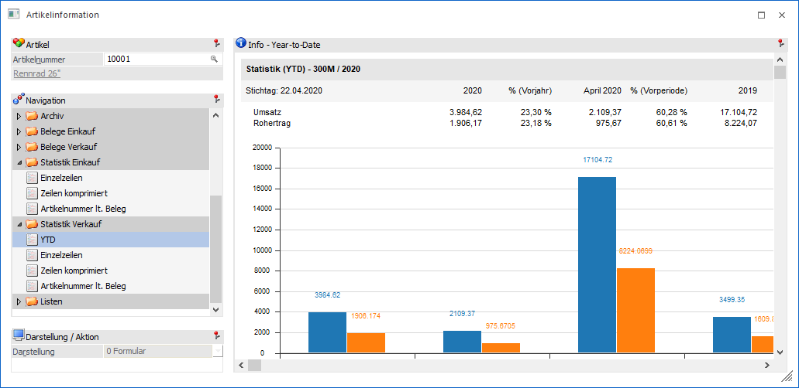

In der Ansicht "YTD" werden die Informationen "Menge", "Umsatz" und "Rohertrag" des Artikels ausgegeben. Die Abkürzung "YTD" steht hierbei für "Year-to-Date" und bedeutet, dass die Werte des aktuellen Jahres mit denen des Vorjahres verglichen werden, wobei ein Stichtag vorgegeben ist. Dieser Stichtag ermittelt sich automatisch aus den Elementen "aktueller Tag", "aktueller Monat" und "aktuelles Wirtschaftsjahr".
Beispiel
Die Artikelinformation wird am 21.04.2020 geöffnet, wobei im Wirtschaftsjahr 2019 gearbeitet wird. In diesem Fall wird der Stichtag mit dem 21.04.2019 vorbelegt.
